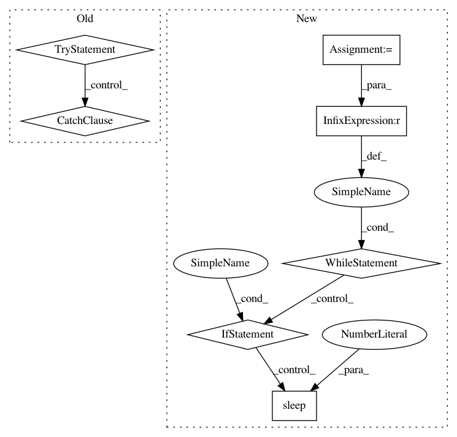

b048efa4f956b80266942caea6ee8b4311e1d17a,autokeras/classifier.py,ClassifierBase,fit,#ClassifierBase#Any#Any#Any#Any#Any#,119
Before Change
signal.signal(signal.SIGALRM, signal_handler)
signal.alarm(time_limit) // Ten seconds
try:
while True:
p = multiprocessing.Process(target=run_searcher_once, args=(x_train, y_train, x_test, y_test, self.path))
p.start()
p.join()
except TimeoutError:
if self.verbose:
print("Timed is up!")
return
def predict(self, x_test):
Return predict result for the testing data.
Args:
After Change
p.start()
p.join()
start_time = time.time()
while time.time() - start_time <= time_limit:
p = multiprocessing.Process(target=run_searcher_once, args=(x_train, y_train, x_test, y_test, self.path))
p.start()
// Kill the process if necessary.
while time.time() - start_time <= time_limit:
if p.is_alive():
time.sleep(1)
else:
break
else:
// If break above the code in this else won"t run
p.terminate()
p.join()
def predict(self, x_test):
Return predict result for the testing data.
Args:
In pattern: SUPERPATTERN
Frequency: 3
Non-data size: 7
Instances
Project Name: jhfjhfj1/autokeras
Commit Name: b048efa4f956b80266942caea6ee8b4311e1d17a
Time: 2018-04-08
Author: jin@tamu.edu
File Name: autokeras/classifier.py
Class Name: ClassifierBase
Method Name: fit
Project Name: deepchem/deepchem
Commit Name: 1b7866b1aeea83478b86ddbc32fe887fee3a65c5
Time: 2017-09-26
Author: peter.eastman@gmail.com
File Name: deepchem/models/tensorgraph/tensor_graph.py
Class Name: TensorGraph
Method Name: fit_generator